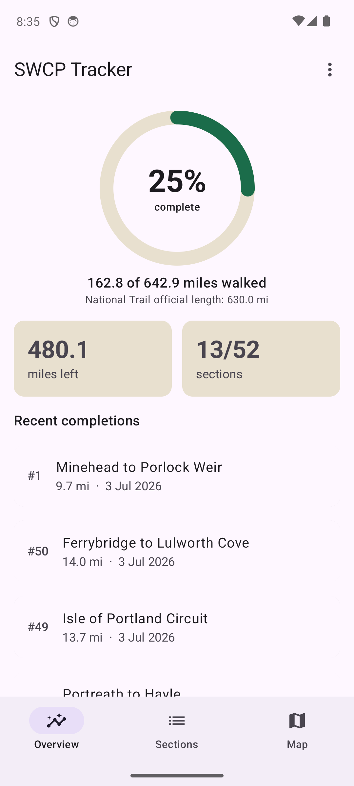
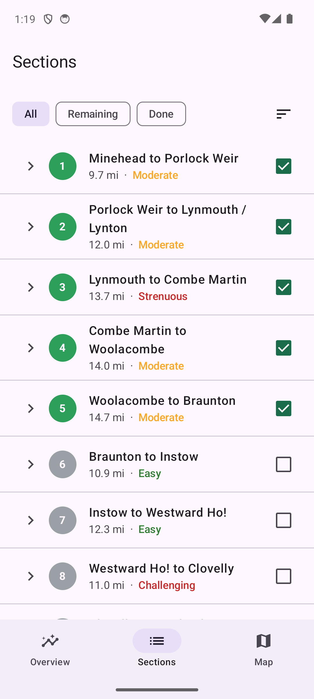
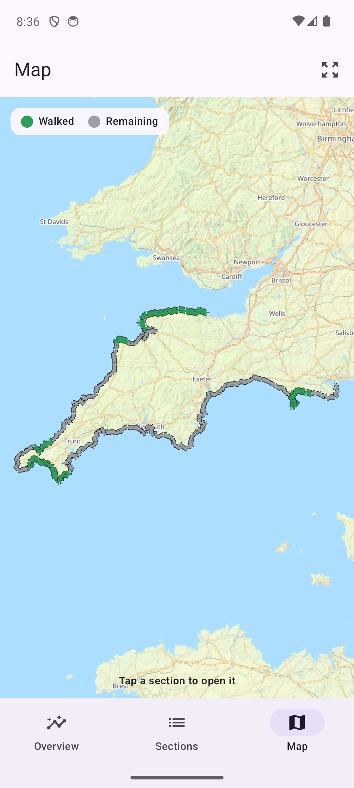
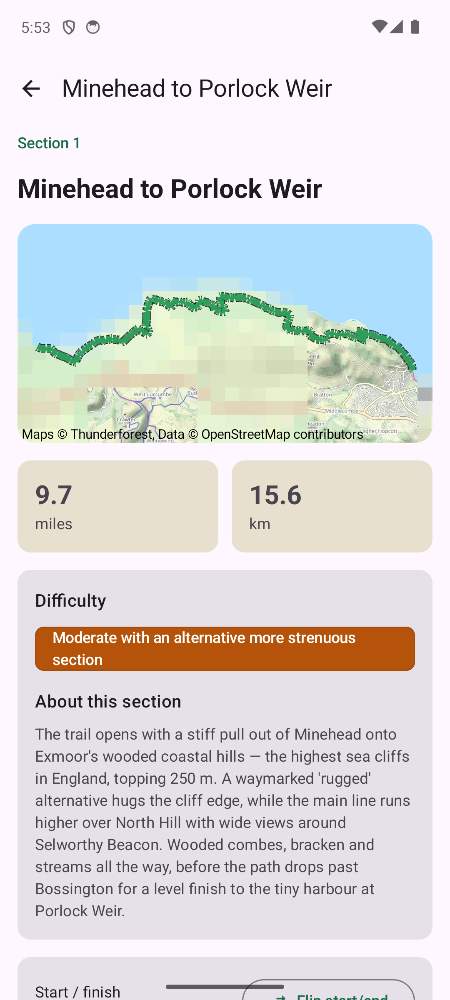

An Android app for ticking off the South West Coast Path, one section at a time.
I'm walking the Coast Path in stages and wanted a simple way to keep score, so I built this. You walk a section, you tick it off, and a green line creeps a little further around the peninsula.




Progress, the 52 sections, the map, and a section page.
No account, no ads, no analytics. Everything stays on your phone unless you export it yourself. The privacy policy is short.
It's nearly on Google Play — new developers have to run a closed test first. If you'd like to be an early tester and get the app now, open an issue on GitHub and I'll send you the opt-in link. It's free either way.
If the app is useful you can buy me a coffee — or better, support the South West Coast Path Association, who maintain the path itself.
SWCP Tracker is an unofficial hobby project with no connection to the South West Coast Path Association or National Trails. It's a logbook, not a navigation tool: carry a map, and check tides, ferry seasons and firing times before you set out. Maps © Thunderforest, route data © OpenStreetMap contributors (ODbL). Privacy · GitHub